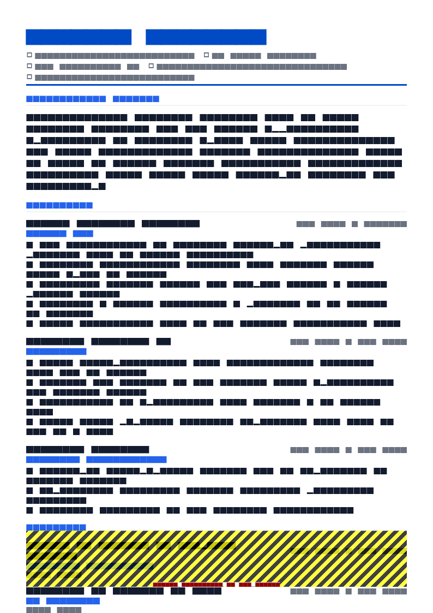

Tools without consequences
Here is the bullet that appears on roughly every analyst resume: “Built and maintained dashboards in Power BI to provide insights to stakeholders.”
It contains a tool, an activity and a genre of output. What it does not contain is a consequence. Nobody learns whether anyone used the dashboard, whether it answered a question, or whether anything changed.
Analysts are hired to change decisions. A hiring manager reading your resume is asking a single question: has this person's work ever caused someone to do something differently? Every strong analyst bullet answers it.
Activity
Built and maintained dashboards in Power BI to provide insights to stakeholders across the business.
Consequence
Segmented 900k customers by purchase recency and category mix; the resulting three-tier campaign lifted repeat purchase rate 14% against a holdout group.
Section order
- Contact — with a portfolio or GitHub URL as plain text if you have one worth clicking
- Summary — domain, data scale, one decision you influenced
- Technical skills — grouped; this is the recruiter's first pattern match
- Experience — bullets ending in decisions and measured change
- Projects — essential when early career, optional after two or three years
- Education and certifications
The summary
Generic
Detail-oriented data analyst with strong analytical and problem-solving skills, experienced in SQL, Python and Power BI, seeking to leverage data to drive business insights.
Specific
Data analyst with 4 years in retail and subscription analytics — SQL, Python, dbt and Power BI. Own churn and cohort reporting for a 900,000-customer base. Analysis of a retention cliff informed a pricing change that cut 90-day churn by 2.4 percentage points.
Domain, tools, scale, consequence. The domain matters more than analysts expect: retail, subscription, healthcare, logistics and financial services analytics involve genuinely different questions, and a hiring manager in one of them wants to see it named.
The skills block
- SQL: window functions, CTEs, query optimisation — PostgreSQL, Snowflake, BigQuery
- Python: pandas, NumPy, matplotlib, scikit-learn (analysis and modelling; not production engineering)
- Transformation: dbt, Airflow, incremental models, data quality tests
- BI: Power BI (DAX, star-schema modelling, row-level security), Tableau, Looker
- Spreadsheets: Excel — Power Query, PivotTables, XLOOKUP, array formulas
- Methods: A/B test design and readout, cohort and retention analysis, regression, time-series forecasting
- Domain: subscription economics, LTV and churn modelling, promotional effectiveness
Three things this does well. It names sub-skills rather than just tools — “window functions, CTEs, query optimisation” distinguishes you from everyone who wrote “SQL”. It scopes honestly, which buys credibility for the rest. And it includes a domain line, which is what separates an analyst who understands the business from one who runs queries.
Do not use rating bars. They contain no extractable text, they have no shared meaning, and self-scoring 3/5 in SQL at the top of an analyst resume argues against you. Full lists in resume skills.
Decision-changing bullets
The shape: the analysis you ran + on what data + the decision it informed + what moved. Not every bullet can carry all four, but the best ones do.
- Replaced 6 hand-maintained spreadsheets with a dbt model and one certified dashboard, cutting weekly reporting effort from 9 hours to 40 minutes and ending three conflicting versions of the revenue number.
- Found a 90-day retention cliff concentrated in one acquisition channel; the resulting pricing change cut 90-day churn by 2.4 percentage points across 40,000 monthly signups.
- Rebuilt the marketing attribution model to a data-driven basis, reallocating £180k of quarterly spend and reducing cost per qualified lead from £310 to £185.
- Added 22 dbt tests after a silent currency-conversion bug reached a board pack; no data incident has reached leadership reporting since.
That last bullet is worth noticing. Analysts rarely write about reliability, and it is one of the things senior hiring managers care most about — because an analyst whose numbers are wrong is worse than no analyst. A bullet about catching an error and hardening against it reads as maturity.


The analyst metric menu
| Dimension | What to cite |
|---|---|
| Data scale | Rows or events processed, customers covered, sources integrated, refresh frequency, warehouse size |
| Effort removed | Manual hours eliminated, reports retired, spreadsheets replaced, query runtime cut, cost per query |
| Decision impact | The change your analysis drove and its measured effect — churn, conversion, spend reallocated, price change, headcount planned |
| Reliability | Data freshness, test coverage, incident count, reconciliation variance, uptime of scheduled jobs |
| Adoption | Dashboard users, teams onboarded, self-serve rate, ad hoc requests reduced |
| Experimentation | Tests designed and read out, minimum detectable effect achieved, sample sizes, decisions shipped from results |
If you can only add one kind of number to your resume, make it decision impact. Everything else is input; that is output.
Projects that prove something
For anyone with under about two years of analyst experience, projects are the most important section. But most portfolio projects are worthless because they answer no question — a notebook exploring the Titanic dataset tells a hiring manager nothing.
A project earns its place when it does four things:
- Uses messy, real data. Public transport, government open data, planning applications, company filings, an API you had to page through. Cleaned competition datasets prove nothing about cleaning.
- Answers a question someone would ask. Not “explore the data” but “which routes lost the most punctuality after the timetable change, and what should be prioritised?”
- States a conclusion and a recommendation. The single most common gap. Analysis without a “therefore” is homework.
- Admits a limitation. Naming the confound you could not remove is a stronger signal of analytical maturity than any model choice.
Bus punctuality after the 2026 timetable change — Python, DuckDB, Power BI · github.com/yourname/bus-punctuality
- Ingested 4.2M timetabled and actual arrival records across 180 routes from an open transit API, handling 11% missing observations and inconsistent stop identifiers.
- Isolated 9 routes accounting for 41% of the total delay increase; recommended prioritising 3 corridors where a small dwell-time change had the largest modelled effect.
- Limitation documented: no weather or roadworks controls available, so seasonal confounding is not fully excluded.
Breaking in with no analyst job
Two routes, and the first is much stronger than most people realise.
Route one: find the analyst work inside your current job. If you build the weekly reporting, maintain the forecast spreadsheet, or pull the numbers everyone asks you for, you are already doing analyst work — and unlike a portfolio project, it is verifiable through a reference. Write it up properly:
Built the SQL and Power BI reporting used by 3 site managers for shift planning, replacing a manual process I had previously run for four years; analysed 2 years of pick-error data to identify 4 recurring causes, and the resulting layout change cut errors 31% across a 60-person site.
Route two: portfolio plus certification. Two or three projects to the standard above, plus a credential that signals seriousness — Google Data Analytics, Microsoft PL-300 for Power BI, or a recognised SQL certification. The certification opens the filter; the projects win the interview.
Structure the resume as a hybrid: skills, then projects or bridge work, then full dated employment history. Full method in career change resume.
BI, product, marketing and financial analysts
| Role | Foreground | Typical bullet shape |
|---|---|---|
| BI / analytics engineer | Modelling, pipeline reliability, self-serve adoption | Rebuilt a nightly batch as an incremental dbt model, cutting warehouse spend 38% and data lag from 9 hours to 20 minutes. |
| Product analyst | Funnels, experimentation, feature adoption, retention | Read out 14 A/B tests in a year; 6 shipped, including an onboarding change that lifted week-1 retention 7 points. |
| Marketing analyst | Attribution, CAC and LTV, channel mix, campaign lift | Reallocated £180k of quarterly spend on attribution rebuild; cost per qualified lead fell from £310 to £185. |
| Financial analyst | Forecast accuracy, variance analysis, model ownership | Owned the rolling 13-week cash forecast; mean absolute error fell from 11% to 4% over three quarters. |
| Operations analyst | Throughput, capacity, cost-to-serve, service levels | Modelled shift coverage against arrival curves, cutting overtime hours 24% while holding SLA at 98%. |
| Healthcare / clinical analyst | Quality metrics, coding accuracy, regulatory reporting | Automated a monthly quality submission, removing 20 hours of manual abstraction and eliminating two recurring validation failures. |
Writing for the technical screen
Worth remembering while you write: on an analyst resume, every technical claim is an interview question waiting to happen, and the screen usually starts from your own document.
So three practical consequences. If you list window functions, be ready to write one. If you claim a model, know why you chose it over the simpler alternative. And if you cite a business result, know the counterfactual — “how did you know the campaign caused the lift?” is the standard follow-up, and “we held out 10% of the list” is the answer that ends it well.
This is also the argument for honest scoping in your skills block. Nobody is penalised for “pandas for analysis, not production pipelines”. Plenty of people are penalised for an unqualified claim they cannot support.
Templates

ATS Pro resume template
ATS Pro handles a long, categorised technical stack without fragmenting the reading order, and it is the highest-parsing layout in the library at 98. Free, with watermark-free PDF export.
Use this template in NextCV| Template | ATS score | Price | Best for |
|---|---|---|---|
| ATS Pro | 98 | Free | The default choice — maximum parsing safety with a long skills block |
| Software Engineer ATS | 96 | Free | Analysts with a substantial engineering-adjacent stack and projects |
| Pure White | 95 | Free | Senior analysts wanting a restrained, typography-led document |
| Graduate ATS | 92 | Premium | Recent graduates leading with portfolio projects |
| Skills Based | 85 | Free | Career changers moving into analytics from another function |
Checklist
- Summary names domain, data scale and one decision you influenced
- Skills block names sub-skills, not just tool names
- Depth scoped honestly where your experience is partial
- At least half your bullets end in a decision or measured business change
- At least one bullet about data reliability or a mistake you hardened against
- Data scale figures present: rows, customers, sources, frequency
- Projects answer a real question and state a recommendation
- At least one project documents its limitation
- Portfolio or GitHub link, as plain text, that survives a click
- Every technical claim is one you could be examined on
- Single column, text-based PDF, no rating bars
Frequently asked questions
What should a data analyst resume include?
A summary naming your domain and the scale of data you own, a grouped technical skills block, experience bullets that end in a decision or a measured business change, and two or three projects if you are early in your career.
The differentiator is consequence. Most analyst resumes list SQL, Python and Power BI and describe building reports. Very few say what the business did differently as a result.
How do I quantify data analyst work?
Five dimensions: data scale (rows, customers, sources, refresh frequency), effort removed (hours of manual work eliminated, reports retired), decision impact (the change your analysis drove and its measured effect), reliability (freshness, test coverage, incidents), and adoption (users of your dashboards, teams onboarded).
Decision impact is the strongest and the most commonly omitted. State the analysis, the decision it informed, and what moved.
Do I need Python on a data analyst resume?
Not universally. A great many analyst roles are SQL plus a BI tool plus advanced spreadsheet work, and being excellent at those beats being shallow across five languages.
List Python where you have genuinely used it, and scope it honestly — “pandas for ad hoc analysis, not production pipelines” is more credible than an unqualified claim that collapses in a technical screen.
How do I get an entry level data analyst job with no experience?
Build two or three projects on real, messy public data and write them up with a decision at the end. The distinguishing feature of a strong portfolio project is not the model — it is that it answers a question someone would actually ask and states what should be done about it.
Also look inside your current job: the reporting you already build in spreadsheets is analyst work, and it is the strongest bridge evidence available to you.
Should a data analyst resume include a portfolio link?
Yes, if the portfolio stands up to a click: two or three finished write-ups with clean code and a stated conclusion. A GitHub profile with three forked tutorials is worse than no link at all.
Write the URL as visible plain text rather than hiding it behind linked words, since text extraction keeps what is visible.
Is a data analyst resume different from a business analyst resume?
They overlap but the emphasis differs. A data analyst resume foregrounds querying, modelling and quantitative method; a business analyst resume foregrounds requirements, process mapping and stakeholder work.
If you are applying to both, keep one master document and shift which bullets lead — the same project can be described as a data problem or a process problem.
NextCV Editorial
NextCV is an AI resume builder by Empire Softtech. We publish the same guidance our in-app ATS analyser is built on — seven weighted sections, 29 templates scored from 72 to 98, and no formatting advice we would not follow ourselves.